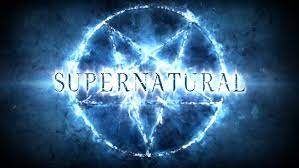
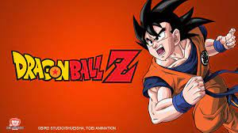

Sobre Mim
Meu nome é André Vinícius dos Santos, tenho 19 anos e gostaria de compartilhar
um pouco sobre mim.
Hobbies e Atividades de Lazer:
- Gamer: Uma das minhas maiores paixões é jogar jogos online com meus
amigos. Através deles, encontro diversão e desafios que valorizo profun-
damente. - Amante da Natureza: Além do mundo virtual, também sou alguém que
valoriza o ar livre. Andar de bicicleta e patins (Roller) são atividades que
me conectam com a natureza e me proporcionam um senso de liberdade
e bem-estar. - Desafios Musicais: Estou sempre em busca de desafios pessoais e recen-
temente comecei a aprender a tocar violão. A música é uma forma de
expressão que me fascina e me permite explorar novas dimensões
criativas.
Esportes Preferidos:
- Futebol: O futebol é meu esporte preferido. Admiro a habilidade dos
jogadores e a paixão que o esporte desperta em todo o mundo. - Voleibol: Além do futebol, tenho um grande apreço pelo voleibol.
Sempre que possível, gosto de praticar com amigos.
Séries Favoritas:
- Breaking bad

- Vikings

- dexter
- espartacus
- sobrenatural

Desenhos que Moldaram Minha Infância:
- Chaves
- Dragon Ball

- Ben 10
Séries de Comédia Favoritas:
- two and a half man
- the big bang theory

Jogos preferidos:
- The last of us

- Valorante
- PUBG